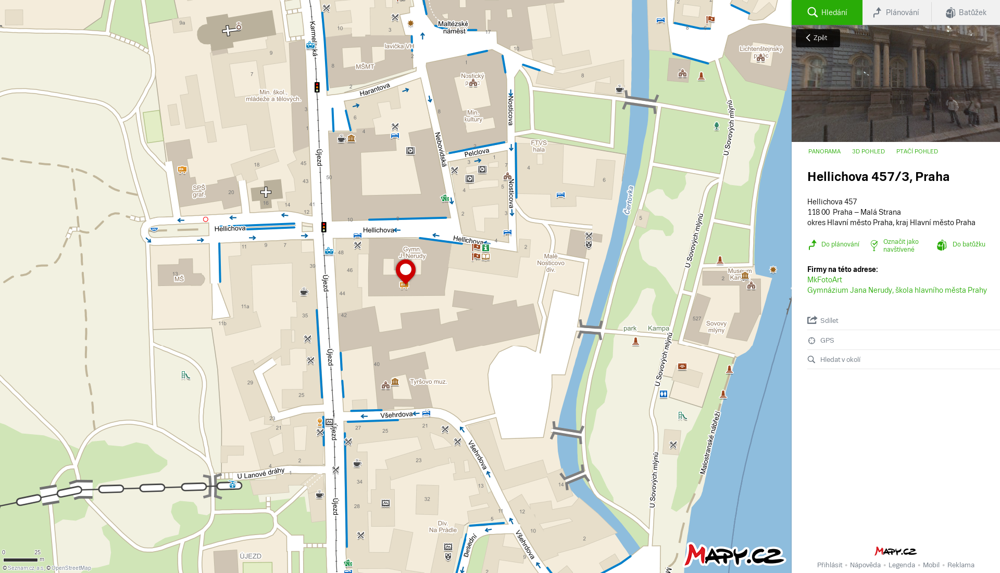
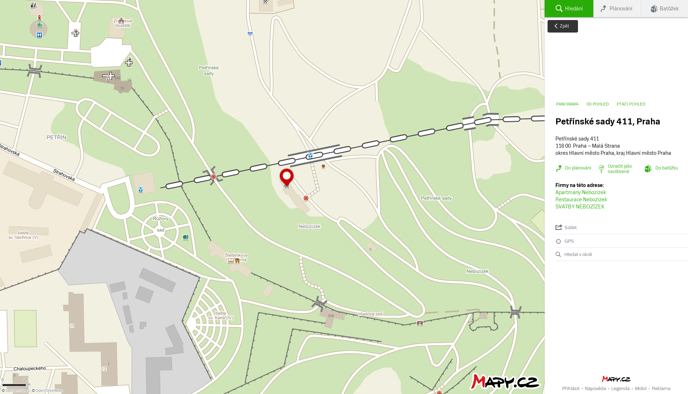

Úvod
Naše staré fotografie byly foceny u pražského Újezdu mezi roky 1901 a 1908. Jejich nové verze jsme fotili v červnu roku 2016.
Fotografie 100 - Pohled ulicí Karmelitskou

Zachyceno je toto místo:
{kind=link}
Budova v ulici Karmelitská na Praze 1 čp. 528 sloužila kdysi jako gymnázium, ve kterém studoval i Miroslav Tyrš - první náčelník Sokola. Budova u sportovního zaměření zůstala, protože dnes slouží jako MŠMT, tedy budova Ministerstva školství, mládeže a tělovýchovy konkrétně areál "B". Co se týká tramvajové dopravy, tak ta v ulici karmelitská stále pokračuje. V současnosti ulicí projíždí tramvaje 12, 20, 22, 57, 91. Stejně jako budova s čp. 528 tak i budova naproti, tedy čp. 386, patří MŠMT; konkrétně je to areál “E”.
Fotografie 101 - Průhled Karmelitskou ulicí od průlomu U klíčů k Újezdu

Zachyceno je toto místo:
{kind=link}
Na rohu ulic Prokopská a Karmelitská kdysi stával dům čp. 376 U zlatého pštrosa, který sloužil jako hotel Garni. Nejzajímavější je ale budova v dálce, tedy na adrese Karmelitská 388. Tato budova byla postavena v letech 1656 – 1677, kde na stavbě pomáhal i Kryštof Diezenhofer a byla postavena v barokním slohu. Bohužel na konci 18. století byl kostel zrušen a přestaven na poštovní úřad. Dnešní podobu však získal až v letech 1850-1854 kdy byla budova přestavěna na četnickou kasárnu. V této podobě je budova zachycena na fotce. Dnes slouží budova jako muzeum hudby.
Fotografie 102 - C.a k. česká reálná škola v ulici Novodvorské, čp. 457, dříve reálné gymnázium

Zachyceno je toto místo:
{kind=link}
V ulici Helichova stojí budova, která dříve sloužila jako česká reálná škola, neboli reálka. Reálná škola je střední škola, která je na rozdíl od gymnázia zaměřená na přírodovědné obory a jazyky. Dnes je budova známá jako Gymnázium Jana Nerudy. Výuka touto školou byla zahájena 6. října 1865, ale do budovy dřívější reálné školy se přestěhovala až v roce 1876. Tradičním názvem školy bylo Malostranské gymnasium. Tento název dnes vlastní jiné gymnázium. Prvním ředitelem byl Václav Zelený. V roce 2010 bylo gymnázium označeno Ministerstvem školství za 2. nejlepší střední školu v České republiice. Gymnázium je oceněno certifikátem LabelFrancÉducation.
Fotografie 103 - Zahradní hostinec Na Nebozízku, nazývaný také Haasenburk, čp. 411

Zachyceno je toto místo:
{kind=link}
Na starší fotografii je zahradní hostinec Na Nebozízku. Tuto budovu zde nechal v roce 1809 postavit Karel Maxmilián Lažanský a poté ji koupil Bohumil Haas a udělal z ní hostinec. Proto také bývá hostinec někdy nazýván Haasenburk. Tradice pohostinství byla od té doby zachována a nyní se zde stále ve stejné budově od roku 2008 nachází Restaurant a hotel Nebozízek.
Zdroje: http://www.starapraha.cz/pohlednice-praha-mostecka.php?&toperStarEhJUS=1; https://mapy.cz/; http://ramnebornova.blog.idnes.cz/blog.aspx?c=141387